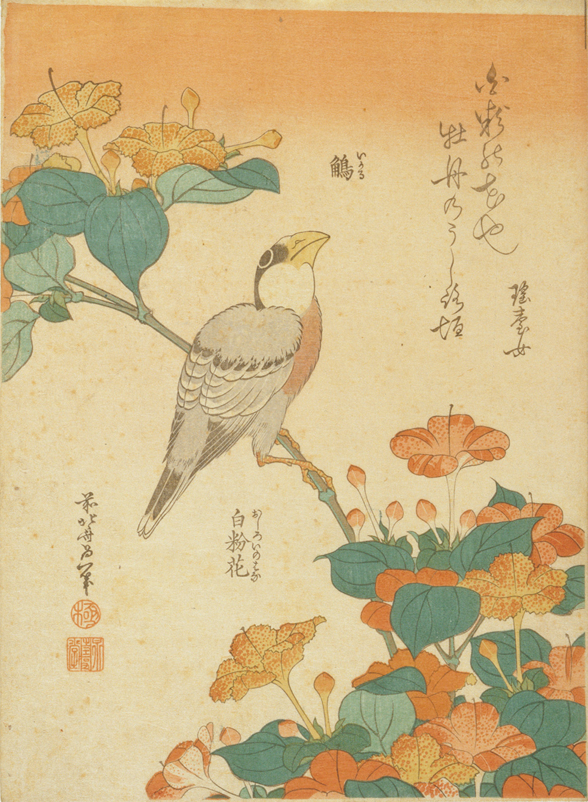

作品名 「鵤 白粉花」
花言葉 「臆病」「恋を疑う」「内気」
白粉花
「臆病」
花名の白粉花（オシロイバナ）は、黒いタネの中にある胚乳が、白粉（おしろい）に似た白い粉であることに由来します。また、午後4時ごろから芳香を放つ花を咲かせるため、夕化粧（ユウゲショウ）の別名もあります。人目を避けるように夕方から咲き始めることから、「臆病」「内気」という花言葉がつけられました。
鵤 白粉花
葛飾北斎
葛飾北斎は、江戸時代後期の浮世絵師です。主に風景を描いた作品で有名です。浮世絵だけでなく、漫画や挿絵師としても活躍し、大衆的な評価も得ていました。葛飾北斎の描く浮世絵は、その当時の日本の画家たちだけでなく、西洋の印象派の画家にも多大な影響を与えました。『冨嶽三十六景』とほぼ同じ頃の、北斎が70歳代前半に描いた縦中判10枚揃花鳥図シリーズの一つ。
出典：ColBase を加工して作成
| 作品名 | 鵤 白粉花 |
| 作者 | 葛飾北斎 |
| 制作年 | 江戸時代・19世紀 |
| 種類 | 中判 錦絵 |
| 所蔵 | ボストン美術館 |